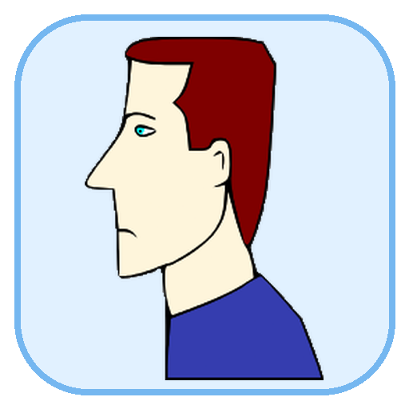
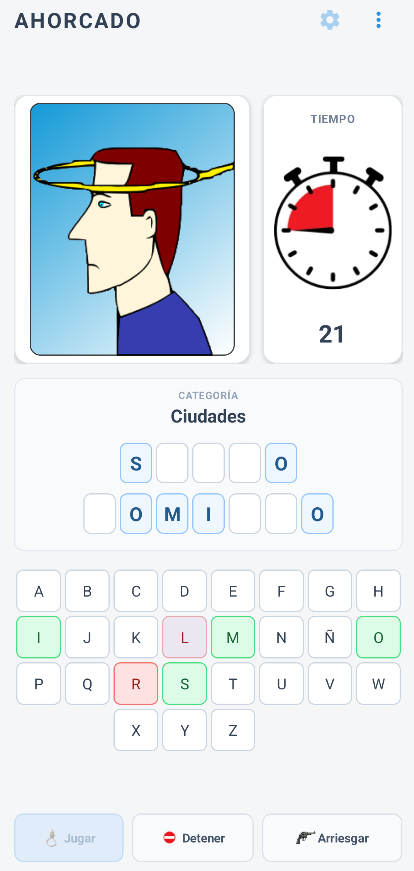
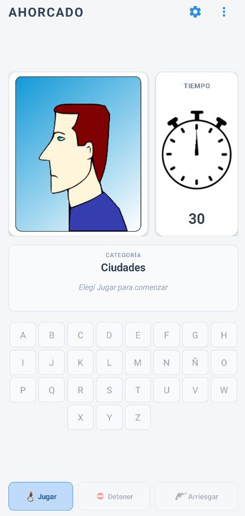
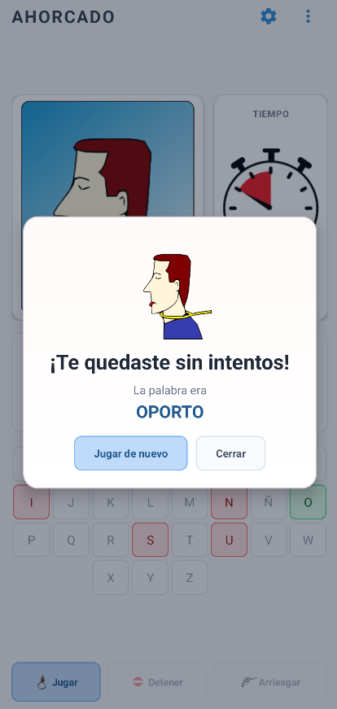

Más de 500 palabras
Un corpus amplio en español y su versión equivalente en inglés.

AhorcadoAHORCADO · ANDROID · VERSIÓN 1.0.0
Una versión móvil hecha desde cero para Android, pensada para teléfonos y tablets. Más de 500 palabras por idioma, cuatro categorías, tiempo configurable y partidas completamente offline.

JUGAR, SIN COMPLICACIONES
Un corpus amplio en español y su versión equivalente en inglés.
Países, ciudades, marcas de autos y bandas de rock.
Elegí partidas de 15, 30, 45 o 60 segundos.
La app no necesita Internet para jugar y no incluye publicidad ni analytics.
Interfaz nativa con adaptación de tamaño para teléfonos y tablets.
Elegí letras o arriesgá la palabra completa antes de que se termine el tiempo.
LA EXPERIENCIA
Una interfaz clara, con el personaje, el tiempo, la palabra y el teclado siempre a mano.


PRIVACIDAD POR DISEÑO
Ahorcado no requiere una cuenta, no tiene anuncios, no usa analytics, no solicita permisos de Android y no necesita acceso a Internet para jugar.
Leer política de privacidad →GOOGLE PLAY